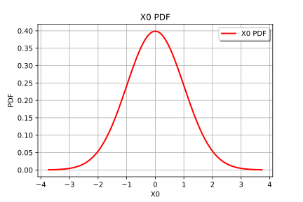
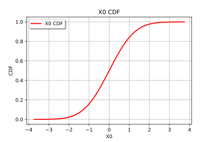
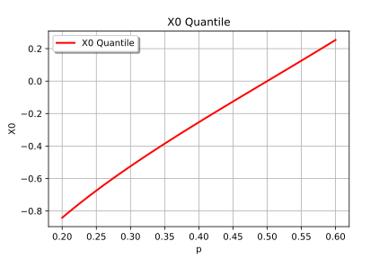
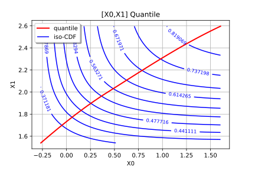

Distribution manipulation¶
In this example we are going to exhibit some of the services exposed by the distribution objects:
- ask for the dimension, with the method getDimension
- extract the marginal distributions, with the method getMarginal
- to ask for some properties, with isContinuous, isDiscrete, isElliptical
- to get the copula, with the method getCopula*
- to ask for some properties on the copula, with the methods hasIndependentCopula, hasEllipticalCopula
- to evaluate some moments, with getMean, getStandardDeviation, getCovariance, getSkewness, getKurtosis
- to evaluate the roughness, with the method getRoughness
- to get one realization or simultaneously
 realizations, with
the method getRealization, getSample
realizations, with
the method getRealization, getSample - to evaluate the probability content of a given interval, with the method computeProbability
- to evaluate a quantile or a complementary quantile, with the method computeQuantile
- to evaluate the characteristic function of the distribution
- to evaluate the derivative of the CDF or PDF
- to draw some curves
In [1]:
from __future__ import print_function
import openturns as ot
In [2]:
# Create an 1-d distribution
dist_1 = ot.Normal()
# Create a 2-d distribution
dist_2 = ot.ComposedDistribution([ot.Normal(), ot.Triangular(0.0, 2.0, 3.0)], ot.ClaytonCopula(2.3))
# Create a 3-d distribution
copula_dim3 = ot.Student(5.0, 3).getCopula()
dist_3 = ot.ComposedDistribution([ot.Normal(), ot.Triangular(0.0, 2.0, 3.0), ot.Exponential(0.2)], copula_dim3)
In [3]:
# Get the dimension fo the distribution
dist_2.getDimension()
Out[3]:
2
In [4]:
# Get the 2nd marginal
dist_2.getMarginal(1)
Out[4]:
class=Triangular name=Triangular dimension=1 a=0 m=2 b=3
In [5]:
# Get a 2-d marginal
dist_3.getMarginal([0, 1]).getDimension()
Out[5]:
2
In [36]:
# Ask some properties of the distribution
dist_1.isContinuous(), dist_1.isDiscrete(), dist_1.isElliptical()
Out[36]:
(True, False, True)
In [6]:
# Get the copula
copula = dist_2.getCopula()
In [7]:
# Ask some properties on the copula
dist_2.hasIndependentCopula(), dist_2.hasEllipticalCopula()
Out[7]:
(False, False)
In [8]:
# mean vector of the distribution
dist_2.getMean()
Out[8]:
[0,1.66667]
In [9]:
# standard deviation vector of the distribution
dist_2.getStandardDeviation()
Out[9]:
[1,0.62361]
In [10]:
# covariance matrix of the distribution
dist_2.getCovariance()
Out[10]:
[[ 1 0.491927 ]
[ 0.491927 0.388889 ]]
In [11]:
# skewness vector of the distribution
dist_2.getSkewness()
Out[11]:
[0,-0.305441]
In [12]:
# kurtosis vector of the distribution
dist_2.getKurtosis()
Out[12]:
[3,2.4]
In [13]:
# roughness of the distribution
dist_1.getRoughness()
Out[13]:
0.28209479177387814
In [14]:
# Get one realization
dist_2.getRealization()
Out[14]:
[0.331526,2.46203]
In [15]:
# Get several realizations
dist_2.getSample(5)
Out[15]:
| X0 | X1 | |
|---|---|---|
| 0 | -1.1017906374564086 | 0.5472872724320169 |
| 1 | -0.39327811223191167 | 2.4737517398167226 |
| 2 | 1.4096575894246632 | 2.197672325819002 |
| 3 | -1.5284044404305355 | 0.5763846906987611 |
| 4 | 0.5662321090952396 | 1.9206917098077156 |
In [16]:
# Evaluate the PDF at the mean point
dist_2.computePDF(dist_2.getMean())
Out[16]:
0.3528005531670077
In [17]:
# Evaluate the CDF at the mean point
dist_2.computeCDF(dist_2.getMean())
Out[17]:
0.3706626446357781
In [18]:
# Evaluate the complementary CDF
dist_2.computeComplementaryCDF(dist_2.getMean())
Out[18]:
0.6293373553642219
In [19]:
# Evaluate the survival function at the mean point
dist_2.computeSurvivalFunction(dist_2.getMean())
Out[19]:
0.4076996816728151
In [20]:
# Evaluate the PDF on a sample
dist_2.computePDF(dist_2.getSample(5))
Out[20]:
| v0 | |
|---|---|
| 0 | 0.2683016240010336 |
| 1 | 0.17392737029277802 |
| 2 | 0.10284483252878787 |
| 3 | 0.21442208687749553 |
| 4 | 0.06667853570634241 |
In [21]:
# Evaluate the CDF on a sample
dist_2.computeCDF(dist_2.getSample(5))
Out[21]:
| v0 | |
|---|---|
| 0 | 0.3512684322211507 |
| 1 | 0.07566107356086288 |
| 2 | 0.15773710557863138 |
| 3 | 0.01886743345417667 |
| 4 | 0.9561218547537261 |
In [22]:
# Evaluate the probability content of an 1-d interval
interval = ot.Interval(-2.0, 3.0)
dist_1.computeProbability(interval)
Out[22]:
0.9758999700201907
In [23]:
# Evaluate the probability content of a 2-d interval
interval = ot.Interval([0.4, -1], [3.4, 2])
dist_2.computeProbability(interval)
Out[23]:
0.129833882783416
In [24]:
# Evaluate the quantile of order p=90%
dist_2.computeQuantile(0.90)
Out[24]:
[1.60422,2.59627]
In [25]:
# and the quantile of order 1-p
dist_2.computeQuantile(0.90, True)
Out[25]:
[-1.10363,0.899591]
In [26]:
# Evaluate the quantiles of order p et q
# For example, the quantile 90% and 95%
dist_1.computeQuantile([0.90, 0.95])
Out[26]:
| v0 | |
|---|---|
| 0 | 1.2815515655446004 |
| 1 | 1.6448536269514715 |
In [27]:
# and the quantile of order 1-p and 1-q
dist_1.computeQuantile([0.90, 0.95], True)
Out[27]:
| v0 | |
|---|---|
| 0 | -1.2815515655446004 |
| 1 | -1.6448536269514715 |
In [28]:
# Evaluate the characteristic function of the distribution (only 1-d)
dist_1.computeCharacteristicFunction(dist_1.getMean()[0])
Out[28]:
(1+0j)
In [29]:
# Evaluate the derivatives of the PDF with respect to the parameters at mean
dist_2.computePDFGradient(dist_2.getMean())
Out[29]:
[0,-0.398942,0.12963,-0.277778,-0.185185,0]
In [30]:
# Evaluate the derivatives of the CDF with respect to the parameters at mean
dist_2.computeCDFGradient(dist_2.getMean())
Out[30]:
[-0.398942,-0,-0.169753,-0.231481,-0.555556,0]
In [31]:
# draw PDF
dist_1.drawPDF()
Out[31]:

In [32]:
# draw CDF
dist_1.drawCDF()
Out[32]:

In [33]:
# Draw an 1-d quantile curve
# Define the range and the number of points
qMin = 0.2
qMax = 0.6
nbrPoints = 101
quantileGraph = dist_1.drawQuantile(qMin, qMax, nbrPoints)
quantileGraph
Out[33]:

In [34]:
# Draw a 2-d quantile curve
# Define the range and the number of points
qMin = 0.3
qMax = 0.9
nbrPoints = 101
quantileGraph = dist_2.drawQuantile(qMin, qMax, nbrPoints)
quantileGraph
Out[34]:
